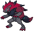

-
Bulbasaur #001

- Grama
- Veneno
Há uma semente de planta em suas costas desde o dia deste Pókemon nasce. A semente cresce lentamente.
-
Ivysaur #002

- Grama
- Veneno
Quando o bulbo em suas costas cresce, parece perder a capassidade de ficar de pé em suas patas traseiras.
-
Venusaur #003

- Grama
- Veneno
Sua planta florece quando está absovendo energia solar. Ele permanece em movimento para buscar luz solar.
-
Charmander #004

- Fogo
Tem preferência por coisas quentes. Quando chove, diz-se que o vapor jorra da ponta de sua cauda.
-
Charmeleon #005

- Fogo
Tem uma natureza bárbara. Na batalha, ele chicoteia sua cauda ardente e corta com garras afiadas.
-
Charizard #006

- Fogo
Ele cospe fogo que é quente o suficiente para derreter pedregulhos. Pode causar incêndios florestais soprando chamas.
-
Squirtle #007

- Água
Quando ele retrai seu longo pescoço em sua concha, ele esguicha água com força vigorosa.
-
Wartortle #008

- Água
É reconhecido como um símbolo de longevidade. Se sua concha tem algas, esse Wartortle é muito antigo.
-
Blastoise #009

- Água
Ele esmaga seu inimigo sob seu corpo pesado para causar desmaios. Em uma pitada, ele se retirará dentro de sua concha.
-
Caterpie #010

- Inseto
Para proteção, ele libera um fedor horrível da antena em sua cabeça para afastar os inimigos.
-
Gengar #094

- Fantasma
- Veneno
Gengar, um Pokémon que espreita nas sombras, é um mestre dos ataques-surpresa. Ele consegue aparecer sorrateiramente por trás dos oponentes sem dar um pio. Além disso, o Movimento Unite de Gengar, Emboscada Fantasma, torna-o invisível. É realmente um movimento digno de Gengar, o Pokémon Sombra.
-
MewTwo #150

- Psiquico
Mewtwo é uma criatura com uma postura humanóide, mas tem algumas características felinas. O corpo de Mewtwo é cinzento-roxo e uma cauda longa totalmente da cor roxa. Mewtwo tem três dígitos circulares em cada apêndice.
-
Mew #151

- Psiquico
Mew é um Pokémon muito curioso e fofo que pode se transformar em qualquer outro tipo de Pokémon. Mew é um Pokémon de tipo psíquico e Mewtwo é o seu clone. Mew é normalmente descrito como um Pokémon gato cor de rosa.
-
Deoxys #386

- Psiquico
O DNA de um vírus espacial sofreu uma mutação repentina após a exposição a um feixe de laser e resultou em Deoxys. O órgão cristalino no peito deste Pokémon parece ser seu cérebro.
-
Darkrai #491

- Trevas
Darkrai é um pokémon tipo Noturno, um dos pokémons lendários da região de Sinnoh. Ele é o Pokémon pesadelo, ao contrário de Cresselia, o Pokémon sonho. Foi o primeiro lendário de Sinnoh á ser revelado.
-
Zoroark #571
- Trevas
As histórias dizem que aqueles que tentaram pegar Zoroark foram presos em uma ilusão e punidos.